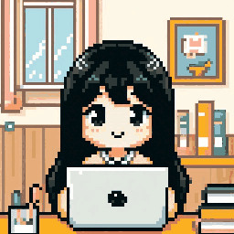

Portofolio
Trecya Dewi Kusumaningrum
Membangun produk digital dari web sampai machine learning.
Lulusan Informatika Universitas Al Azhar Indonesia — mengerjakan website & mini game sebagai freelancer, dan meneliti pengenalan ucapan Bahasa Indonesia lewat deep learning.

Tentang Saya
Belajar sistem lewat data, dan membangunnya lewat kode.
Saya lulusan Program Studi Informatika, Fakultas Sains dan Teknologi, Universitas Al Azhar Indonesia. Selama kuliah, saya mengerjakan proyek website dan mini game untuk klien freelance, sambil mendalami machine learning lewat riset tugas akhir tentang pengenalan ucapan otomatis (ASR) Bahasa Indonesia.
Saya juga aktif di organisasi kampus — Himpunan Mahasiswa Informatika (HMIF), Badan Eksekutif Mahasiswa Fakultas Sains dan Teknologi (BEM FST), beberapa kepanitiaan acara, serta UKM Tari Saman yang sudah beberapa kali menjadi juara di berbagai kompetisi.
🏆 Juara kompetisi Tari Saman bersama UKM kampus
Organisasi & Kegiatan Kampus
Proyek Pilihan
Yang sudah
saya bangun.
Dari riset akademik sampai proyek pesanan klien — berikut beberapa yang paling mewakili cara saya bekerja.
Riset ASR — BiGRU vs BiLSTM
Makin pendek makin baik · lihat proyek 01
Riset ASR: BiGRU vs BiLSTM pada CRNN-CTC
Tugas akhir yang membandingkan dua varian layer rekuren dua arah untuk pengenalan ucapan Bahasa Indonesia, dilatih pada 30.256 data dari korpus Mozilla Common Voice. BiLSTM unggul dengan WER 26,36% dan CER 6,59%.
NR Order System — Marketplace Server Roleplay
Sistem pemesanan barang untuk komunitas di server roleplay GTA V (FiveM): katalog berkategori dengan batas stok, status pesanan yang bisa dipantau anggota, dan panel admin untuk produk, pesanan, serta peran pengguna.
Flappy Ayang — Mini Game
Mini game satu tombol bergaya piksel: terbang menembus rintangan bernama LDR, Overthink, dan Waktu untuk mengumpulkan 23 hati. Dimainkan langsung dari browser, ponsel maupun komputer.
Maze Ayang — Mini Game Labirin
Labirin piksel yang tata letaknya dirancang manual — menyusuri lorong, memungut bunga yang tersebar, sampai bertemu karakter yang menunggu di seberang peta.
Website Portofolio Ini
Halaman yang sedang kamu baca — dibangun sendiri dari nol tanpa framework, dengan isi seluruh proyek terpusat di satu berkas data agar mudah dirawat.
Klik satu baris proyek untuk membuka detailnya
Kemampuan
Area yang
saya kuasai.
Tiga bidang utama yang saling melengkapi dalam cara saya membangun sesuatu.
Pengembangan Web
Membangun halaman web dari struktur hingga tampilan akhir, dengan fokus pada kejelasan konten dan kenyamanan pengguna di berbagai ukuran layar.
Machine Learning
Merancang dan melatih model deep learning end-to-end — dari pra-pemrosesan data audio, arsitektur CRNN, hingga evaluasi dengan metrik WER dan CER.
Game Development
Mengembangkan mini game sesuai kebutuhan klien, dari ide gameplay, logika interaksi, sampai build yang siap dimainkan.
Pengalaman
Perjalanan
kerja saya.
Kombinasi pengalaman teknis dan kerja langsung dengan pelanggan.
Suksestama
Berkontribusi selama kurang lebih 5 bulan. Tambahkan posisi/jabatan, periode kerja, dan tanggung jawab utamamu di sini agar lebih spesifik.
Barista
Lebih dari 2 tahun bekerja di industri kopi pada beberapa coffee shop di area Tangerang Selatan dan Jakarta Selatan — melayani pelanggan, mengoperasikan kasir dan pembayaran, serta bekerja dalam tim yang cepat dan padat.